Endocrinología
Resistencia a la Insulina: Mecanismos
Una revisión detallada de la fisiopatología de la resistencia a la insulina y las estrategias no farmacológicas.
Colección completa de artículos basados en evidencia, guías oficiales y estudios clínicos actualizados.
Intenta borrar el campo de búsqueda o seleccionar una categoría diferente.
Una revisión detallada de la fisiopatología de la resistencia a la insulina y las estrategias no farmacológicas.

Comprendiendo el metabolismo de proteínas, carbohidratos y lípidos a nivel celular.

Actualizaciones sobre diagnóstico, monitoreo y control de la presión arterial sistémica.

Impactos neurobiológicos del estrés prolongado y marcadores hormonales de la salud mental.

Cómo la luz y los ciclos de sueño afectan tu metabolismo, hormonas y sistema inmunológico.

El papel del músculo esquelético como órgano endocrino y sus beneficios sistémicos.
El papel hormonal del calcitriol en la modulación de las células de defensa del cuerpo.
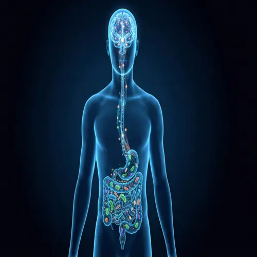
El eje intestino-cerebro: cómo las bacterias intestinales influyen en el estado de ánimo y la ansiedad.
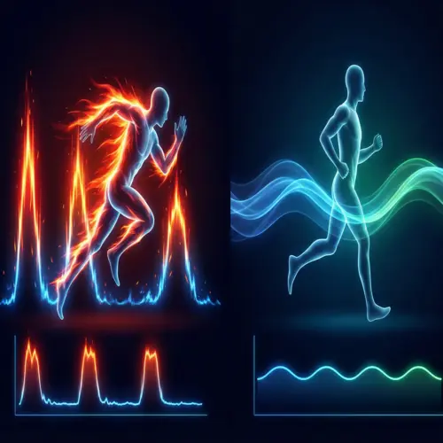
Comparación de eficacia en biogénesis mitocondrial y salud cardiovascular.
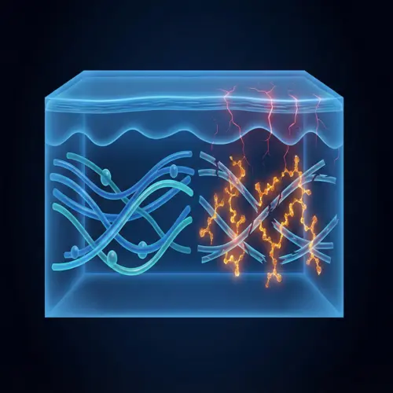
Cómo el exceso de azúcar degrada el colágeno y acelera el envejecimiento de la piel.
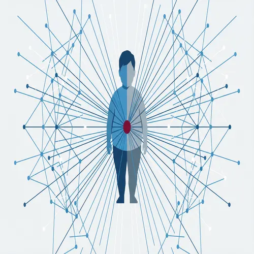
Datos de la OMS sobre el crecimiento de la obesidad en menores y estrategias de intervención.
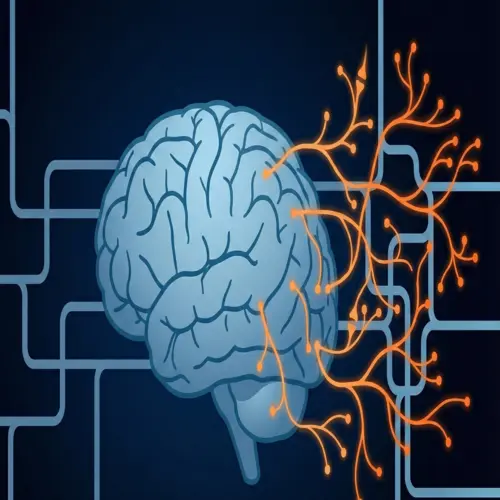
La capacidad del cerebro para reorganizarse y aprender nuevas habilidades en la edad adulta.
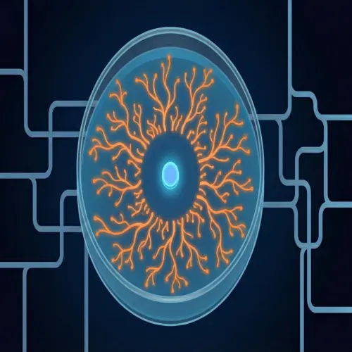
El peligro global de las superbacterias y el uso racional de medicamentos antimicrobianos.
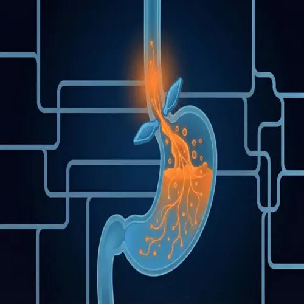
Protocolos dietéticos y conductuales para el manejo del reflujo gastroesofágico.
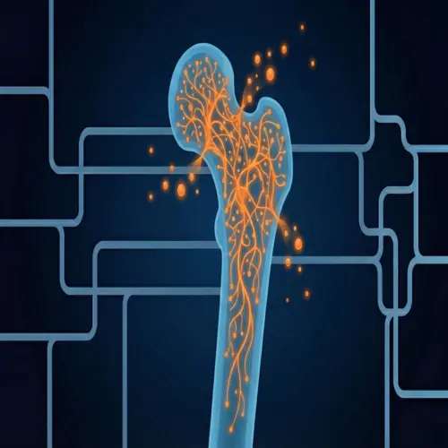
La importancia del calcio, la vitamina D y los ejercicios de impacto para la salud ósea.
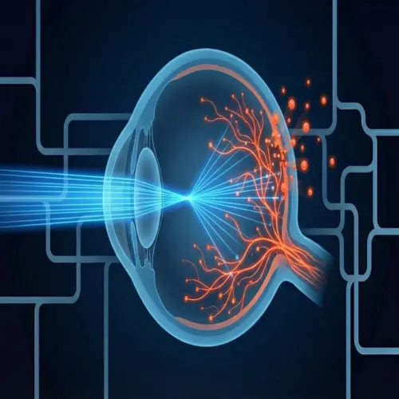
Mitos y verdades sobre el impacto de las pantallas digitales en la retina y el sueño.
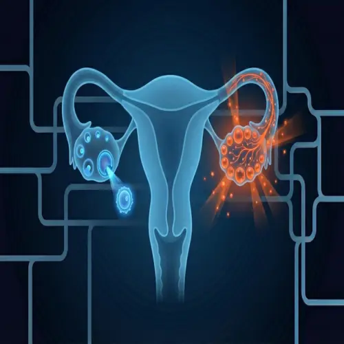
Diagnóstico, resistencia a la insulina y manejo multidisciplinario del SOP.
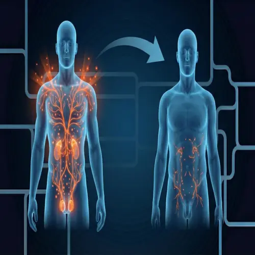
Declive hormonal natural (andropausia) y cuándo el reemplazo está clínicamente indicado.
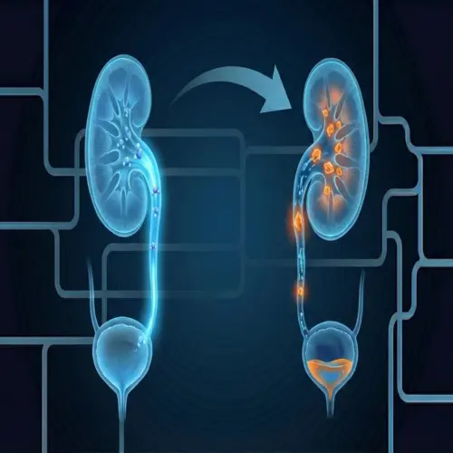
Factores de riesgo dietéticos para cálculos renales y estrategias de prevención.
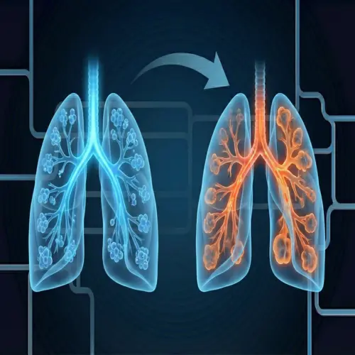
El impacto del tabaquismo y la contaminación en la función pulmonar a largo plazo.
Evidencia sobre cómo la dieta, el alcohol y el ejercicio influyen en el riesgo oncológico.
Efectos del mindfulness en la reducción de síntomas de ansiedad y dolor crónico.
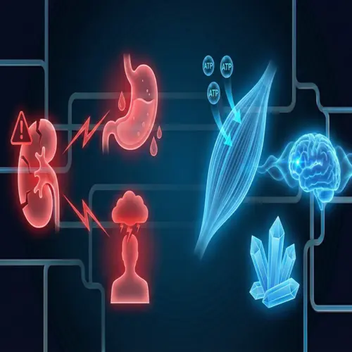
Seguridad, dosificación y beneficios de la creatina más allá de la hipertrofia muscular.
Lo que podemos aprender de poblaciones que viven más de 100 años.
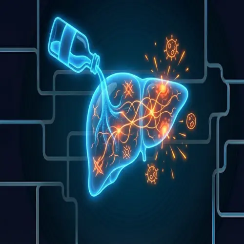
Progresión del hígado graso a la cirrosis y límites de consumo seguro.
Cómo el ambiente y el estilo de vida pueden activar o silenciar genes de enfermedades.
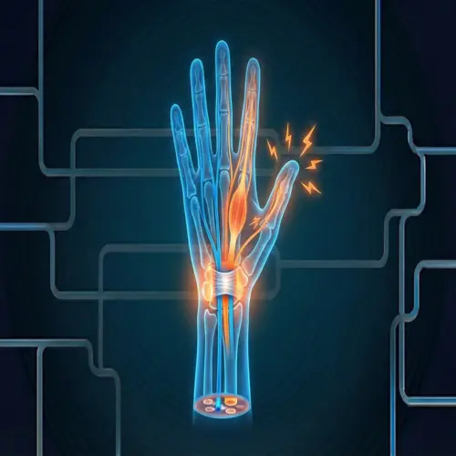
Ergonomía laboral y ejercicios preventivos para lesiones por esfuerzo repetitivo.
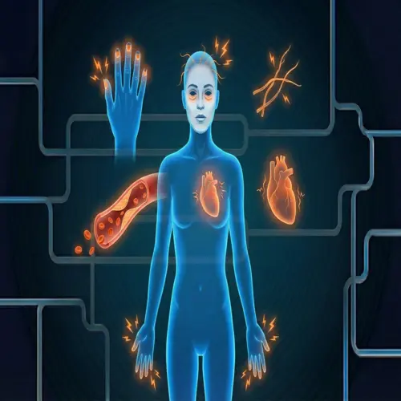
Diagnóstico diferencial de la deficiencia de hierro e impacto en la oxigenación y energía.
Diferencias clínicas, desencadenantes ambientales y opciones de tratamiento médico.
El calendario de vacunación más allá de la infancia: herpes zóster, neumonía y hepatitis B.
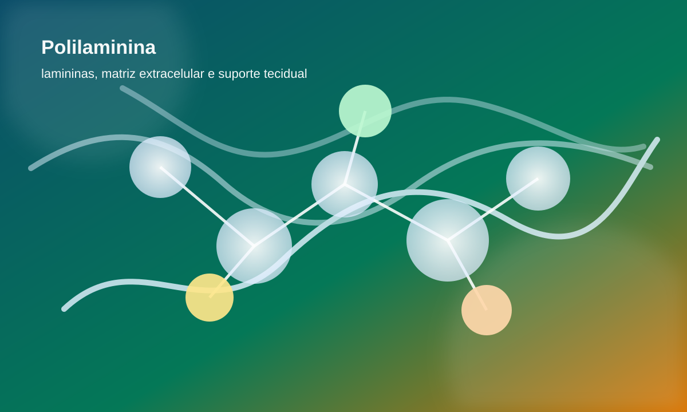
Revisión científica de la polilaminina: biología de la laminina, mecanismos, beneficios estudiados para la salud, seguridad y cómo usar.
Comprende LDL, HDL, VLDL y triglicéridos: valores de referencia, aterosclerosis y estrategias dietéticas y farmacológicas.
Guía científica de 16:8, 5:2 y OMAD: autofagia, cetogénesis, pérdida de peso y longevidad basada en evidencia.
Todo sobre TSH alto, T4 libre, síntomas, tiroiditis de Hashimoto y tratamiento con levotiroxina basado en evidencia.
Guía completa: HbA1c, metformina, inhibidores SGLT2, agonistas GLP-1 y estrategias de remisión basadas en evidencia.
TAG, trastorno de pánico, ansiedad social — neurobiología del miedo, TCC y medicamentos basados en evidencia.
Sofocos, TRH, riesgo cardiovascular y osteoporosis — todo sobre la salud de la mujer en la menopausia.
Guía científica sobre esteatosis hepática: fisiopatología, diagnóstico por elastografía, nueva nomenclatura MASLD y tratamiento basado en evidencias.